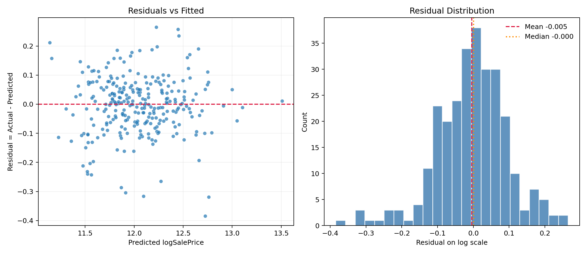

Pandoc not found. HTML is generated, and Python fallback also exports PDF.
log1p(SalePrice).LassoCV has the lowest CV RMSE among the tested linear model families in this report.SalePrice is strongly right-skewed (sample skewness 1.8829).log1p(SalePrice), skewness drops to 0.1213, which makes the target closer to the constant-variance, approximately symmetric setting assumed by linear models.LinearRegression is a useful baseline, but it keeps every encoded column. RidgeCV stabilizes coefficients, but still leaves every predictor in the model. LassoCV both regularizes and zeroes weak predictors, so it gives the best balance of predictive performance and interpretability for this case.| Model family | CV RMSE(log) | CV SD | Gap vs best |
|---|---|---|---|
| LassoCV | 0.091781 | 0.004805 | 0.000000 |
| RidgeCV | 0.092707 | 0.004378 | 0.000926 |
| LinearRegression | 0.100988 | 0.004814 | 0.009207 |
None-style levels rather than treated as random missingness.LotFrontage is filled using neighborhood medians first, then the global median, so the imputation respects local housing context.TotalSF, HouseAge, RemodAge, and TotalBath were evaluated because the exploratory graphs suggest they should matter.| Feature set | Variables before encoding | CV RMSE(log) | CV SD | Decision |
|---|---|---|---|---|
| Original cleaned features | 79 | 0.091781 | 0.004805 | Retain |
| Original + TotalSF + HouseAge + RemodAge + TotalBath | 83 | 0.091817 | 0.004715 | Tested, not retained |
from sklearn.compose import ColumnTransformer
from sklearn.impute import SimpleImputer
from sklearn.linear_model import LassoCV
from sklearn.pipeline import Pipeline
from sklearn.preprocessing import OneHotEncoder, StandardScaler
preprocessor = ColumnTransformer([
("num", Pipeline([
("imputer", SimpleImputer(strategy="median")),
("scaler", StandardScaler()),
]), numeric_cols),
("cat", Pipeline([
("imputer", SimpleImputer(strategy="most_frequent")),
("onehot", OneHotEncoder(handle_unknown="ignore")),
]), categorical_cols),
])
model = Pipeline([
("preprocessor", preprocessor),
("lasso", LassoCV(cv=5, random_state=42)),
])General form:
Expanded equation (Top10 coefficients only):
y_hat = 11.858684 + 0.150255 * cat__Neighborhood_Crawfor + 0.121175 * num__GrLivArea + 0.090703 * cat__Neighborhood_StoneBr - 0.089279 * cat__MasVnrType_BrkCmn - 0.083834 * cat__Neighborhood_MeadowV - 0.077165 * cat__RoofMatl_Tar&Grv + 0.070704 * num__YearBuilt + 0.070021 * cat__Exterior1st_BrkFace + 0.069353 * num__OverallQual + 0.055265 * cat__Neighborhood_SomerstTop10 absolute coefficients:
| Rank | Feature | Coefficient | Approx price effect |
|---|---|---|---|
| 1 | cat__Neighborhood_Crawfor | 0.150255 | 16.21% |
| 2 | num__GrLivArea | 0.121175 | 12.88% |
| 3 | cat__Neighborhood_StoneBr | 0.090703 | 9.49% |
| 4 | cat__MasVnrType_BrkCmn | -0.089279 | -8.54% |
| 5 | cat__Neighborhood_MeadowV | -0.083834 | -8.04% |
| 6 | cat__RoofMatl_Tar&Grv | -0.077165 | -7.43% |
| 7 | num__YearBuilt | 0.070704 | 7.33% |
| 8 | cat__Exterior1st_BrkFace | 0.070021 | 7.25% |
| 9 | num__OverallQual | 0.069353 | 7.18% |
| 10 | cat__Neighborhood_Somerst | 0.055265 | 5.68% |
StandardScaler, so each numeric coefficient is the expected log-price change for a +1 standard deviation shift in that variable.exp(coef) - 1, so they are multiplicative interpretations on the original price scale.Neighborhood = Crawfor: relative to the omitted baseline category, predicted sale price is about 16.2% higher.GrLivArea: a +1 standard deviation increase is associated with about 12.9% higher predicted sale price.Neighborhood = StoneBr: relative to the omitted baseline category, predicted sale price is about 9.5% higher.MasVnrType = BrkCmn: relative to the omitted baseline category, predicted sale price is about 8.5% lower.Neighborhood = MeadowV: relative to the omitted baseline category, predicted sale price is about 8.0% lower.RoofMatl = Tar&Grv: relative to the omitted baseline category, predicted sale price is about 7.4% lower.outputs/top_coefficients.csvKFold(n_splits=5, shuffle=True, random_state=42) with neg_root_mean_squared_error on log1p scale.

RMSE (log1p scale) formula:
Back-transform and dollar-scale metrics:
| Metric | Value |
|---|---|
| holdout_rmse_log | 0.099068 |
| holdout_r2_log | 0.934756 |
| cv_rmse_log_mean | 0.091781 |
| cv_rmse_log_std | 0.004805 |
| holdout_rmse_dollar | 19456.02 |
| holdout_mae_dollar | 13215.74 |
| typical_relative_error = exp(holdout_rmse_log)-1 | 0.104141 (10.41%) |
| Holdout price band | n | Median actual price | MAE ($) | Mean absolute % error |
|---|---|---|---|---|
| Q1 | 70 | 110000.00 | 10696.01 | 10.42% |
| Q2 | 70 | 146250.00 | 8773.68 | 5.86% |
| Q3 | 68 | 185750.00 | 11318.88 | 6.03% |
| Q4 | 69 | 265979.00 | 22147.78 | 7.84% |
| Model | n_rows | holdout_rmse_log | cv_rmse_log_mean | selected |
|---|---|---|---|---|
| Baseline | 1460 | 0.135977 | 0.143067 | No |
| Filtered (Cook's D > 4/n) | 1382 | 0.099068 | 0.091781 | Yes |
../graph/08_cooks_distance.png for the influence ranking.../graph/09_outlier_impact_rmse.png for RMSE before and after removing high-influence points.